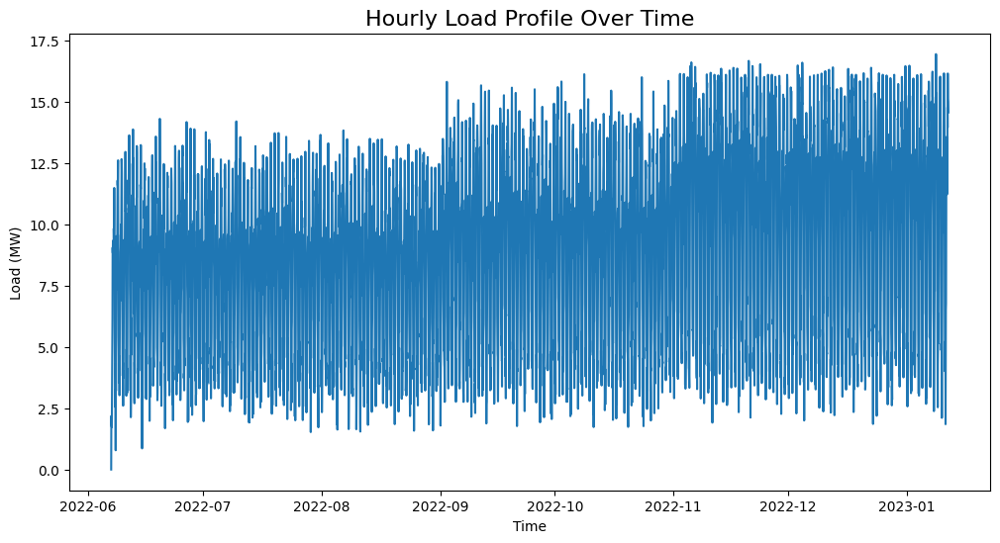
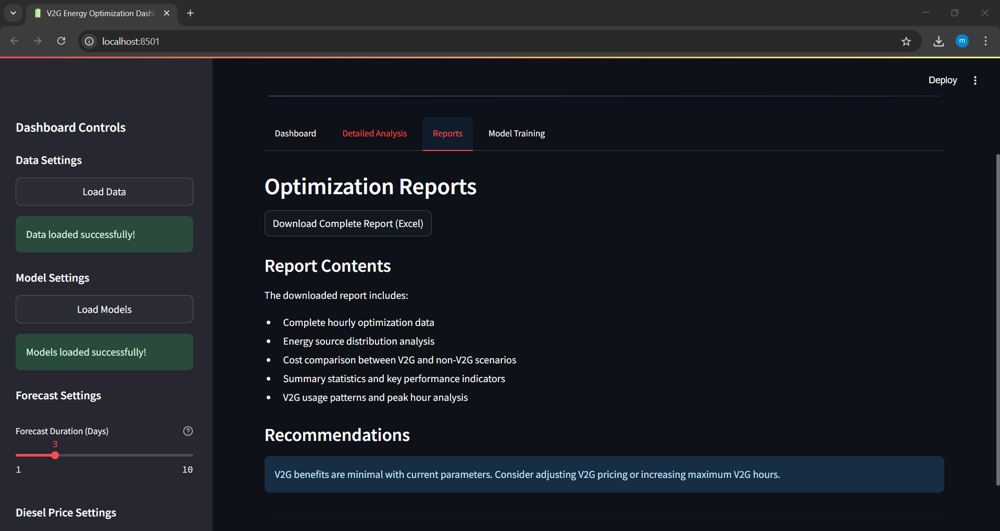

Intelligent Energy Management System with V2G Technology
I. Introduction
V2G: Vehicle-to-Grid

Vehicle-to-Grid (V2G) is an innovative technology that enables two-way energy flow between electric vehicles (EVs) and the power grid. Unlike traditional EV charging, V2G allows EVs not only to charge from the grid but also to return stored energy when needed. This capability supports grid stability, reduces peak demand, and enhances the integration of renewable energy sources.
V2G is already being deployed in several countries, including Japan, the United States, the United Kingdom, and the Netherlands, where it helps balance the power grid and reduce energy costs. In Japan, for example, V2G plays a key role in disaster recovery strategies by allowing EVs to power homes and essential services during outages.
This growing ecosystem shows how V2G is becoming a central component in modern smart grid and energy management systems.
Project Overview
This project introduces an intelligent energy management system that leverages Vehicle-to-Grid (V2G) technology to optimize electricity production costs. The system predicts electricity load and the availability of other energy sources to determine the best times to utilize V2G energy, thereby maximizing efficiency and minimizing overall energy costs.
II. Team
Supervisor
Masrour Tawfik LinkedIn
Members
III. Data Collection
1. MATLAB Simulation
We implemented a custom Vehicle-to-Grid (V2G) simulation in MATLAB Simulink, inspired by the official example from MathWorks: 24-Hour Simulation of a V2G System.
While our simulation is based on this reference, we made several changes and enhancements to better reflect local conditions, vehicle behavior, and energy sources specific to our use case.
{kind=link}
Input Data
Our simulation required the following inputs:
Solar Irradiance: Collected from NASA’s POWER Data Access Viewer: https://power.larc.nasa.gov/
This dataset provides reliable, global irradiance information and is particularly useful for regions like Meknès, Morocco, where we conducted our case study.
Shading: Simulates the effect of clouds on solar irradiance throughout the day.
def simulate_shading(timestamp): """ Simulate shading factor based on the timestamp. Returns a value between 0 (full shading) and 1 (no shading). """ month = timestamp.month hour = timestamp.hour # Summer (June to September) - mostly no shading if 6 <= month <= 9: base_shading = 0.9 if 6 <= hour <= 18 else 0.7 # Winter (November to February) - mostly shading elif 11 <= month <= 2: base_shading = 0.3 if 6 <= hour <= 18 else 0.2 # Spring and Fall (March to May, October) else: base_shading = 0.7 if 6 <= hour <= 18 else 0.5 # Introduce random fluctuation for each hour fluctuation = np.random.uniform(-0.1, 0.1) shading_value = base_shading + fluctuation shading_value = np.clip(shading_value, 0, 1) return round(shading_value, 2)
Load Profiles: Generated using custom Python scripts that simulate residential demand based on Moroccan usage patterns.
def generate_load_profile(date, hour): """Generate synthetic load value for given datetime and hour""" # Base daily pattern (evening peak at ~6:30 PM) if date.weekday() < 5: # Weekdays base_pattern = [0.12, 0.10, 0.08, 0.07, 0.07, 0.15, 0.25, 0.40, 0.55, 0.60, 0.65, 0.60, 0.55, 0.50, 0.55, 0.65, 0.75, 0.85, 0.95, 0.85, 0.70, 0.50, 0.30, 0.20] else: # Weekends (Friday & Saturday) base_pattern = [0.15, 0.12, 0.10, 0.09, 0.09, 0.20, 0.30, 0.45, 0.60, 0.70, 0.75, 0.80, 0.75, 0.70, 0.75, 0.80, 0.85, 0.90, 0.92, 0.85, 0.75, 0.60, 0.40, 0.25] # Seasonal adjustment (winter = Nov-Feb) month = date.month if month in [11, 12, 1, 2]: # Winter multiplier = 1.25 elif month in [6, 7, 8]: # Summer multiplier = 0.85 else: # Shoulder seasons multiplier = 1.0 # Get base value value = base_pattern[hour] # Apply seasonal multiplier value *= multiplier # Add random fluctuation (±8%) value *= np.random.uniform(0.92, 1.08) # Ensure value < 1 and reasonable minimum return min(max(value, 0.05), 0.99)
Output Data
Our simulation produces two key output time series:
Total Load: Represents the complete electricity demand profile, including both household consumption and vehicle charging requirements.
Solar Energy Production: Captures the amount of energy generated by the solar PV system over time, based on irradiance and shading factors.
2. Other Data
Diesel Price (Weekly):
This data is sourced from the U.S. Energy Information Administration (EIA): EIA Open Data
Provides diesel price data in USD per gallon. We use this data when Moroccan sources are unavailable or for comparative analysis.
To convert this data into MAD per liter, we apply the following formula:
\[\text{MAD_per_liter} = \text{USD_per_gallon} \times 0.26417205 \times 10\]0.26417205 is the conversion factor from gallons to liters.
10 is the approximate exchange rate used to convert USD to Moroccan Dirham (MAD).
3. Conclusion
In summary, our data collection and simulation efforts result in four key time series that serve as the foundation for our energy management analysis:
Load: Total electricity demand, including residential and vehicle charging (MW).
Energy Available in EVs: The energy stored and potentially available in connected electric vehicles through the V2G system (MW).
Solar Energy: Energy generated by the solar PV system, influenced by irradiance and shading factors (MW).
Diesel Price: Weekly diesel prices in Moroccan Dirham per liter (DH/L).
These time series provide comprehensive inputs and outputs for modeling, forecasting, and optimizing the local energy ecosystem.
IV. Training Models
Note
All time series are processed through a pipeline that includes the following steps. Below, we describe the steps for the load time series as an example—other time series follow a similar process.
1. Data Preparation
The time series data comes from a simulation where time is represented in seconds (0, 3600, …, 18907200).
We convert this to hourly timestamps starting from 2022-06-07 00:00:00 and ending at 2023-01-11 20:00:00.
cons_df = pd.read_excel(dir_path + 'Total_Load.xlsx')
start_date = pd.to_datetime('2022-06-07 00:00:00')
cons_df['Time'] = start_date + pd.to_timedelta(cons_df['Time'], unit='s')
2. Statistical Approach
2.1. Stationarity Analysis
2.1.1. Visual Inspection
We plot the time series to visually check for stationarity.
{kind=link}
2.1.2. Augmented Dickey-Fuller Test
We apply the Augmented Dickey-Fuller (ADF) test to check for stationarity. The null hypothesis is that the time series is non-stationary.
from statsmodels.tsa.stattools import adfuller
result = adfuller(cons_df['Load'])
print('ADF Statistic: %f' % result[0])
print('P-value: %f' % result[1])
2.1.3. Kwiatkowski-Phillips-Schmidt-Shin (KPSS) Test
The KPSS test checks for stationarity around a deterministic trend. The null hypothesis is that the time series is stationary.
from statsmodels.tsa.stattools import kpss
import warnings
warnings.filterwarnings("ignore")
result = kpss(cons_df['Load'])
print('KPSS Statistic: %f' % result[0])
print('P-value: %f' % result[1])
2.1.4. Phillips-Perron (PP) Test
The PP test is another method to check for unit roots in the time series.
from arch.unitroot import PhillipsPerron
result = PhillipsPerron(cons_df['Load'])
print('PP Statistic: %f' % result.stat)
print('P-value: %f' % result.pvalue)
2.2. Differencing
If the time series is non-stationary, we apply differencing to make it stationary. We check the ADF test again after differencing.
consumption_diff = cons_df['Load'].diff().dropna()
2.3. SARIMA Model
2.3.1. Initial Parameter Selection
ACF & PACF Analysis: We plot the autocorrelation function (ACF) and partial autocorrelation function (PACF) to identify potential parameters for the SARIMA model.
{kind=link}
Based on the ACF and PACF plots, we select the initial SARIMA parameters as follows:
d = 1: Chosen based on stationarity tests and the need for seasonal differencing.
p = 24: Indicated by significant spikes in the PACF plot, suggesting a seasonal autoregressive component.
q = 23: Derived from the ACF plot, which shows strong autocorrelations up to lag 23, followed by a sharp drop.
s = 24: Represents the seasonal period — 24 hours for daily seasonality in hourly data.
P = 1: The seasonal PACF reveals a spike at lag 24 and its multiples (e.g., 48), indicating a seasonal autoregressive pattern.
Q = 1: The seasonal ACF shows a peak at lag 24, which gradually decays, suggesting a seasonal moving average component.
from statsmodels.tsa.statespace.sarimax import SARIMAX
# Define SARIMA parameters
p, d, q = 1, 1, 23
P, D, Q, s = 0, 1, 1, 24
# P = 0 to avoid the overlap of lags between the seasonal and non-seasonal components.
# Fit the SARIMA model
model = SARIMAX(train, order=(p, d, q), seasonal_order=(P, D, Q, s))
model_fit = model.fit()
2.3.2. Hyperparameter Tuning
To fine-tune the SARIMA model parameters, we use the pmdarima library’s auto_arima function. This helps identify the optimal combination of non-seasonal and seasonal parameters by minimizing the AIC score.
import pmdarima as pm
# Initial parameter guesses
p, d, q = 1, 1, 1 # Non-seasonal components
P, D, Q, s = 0, 1, 1, 24 # Seasonal components
# Perform automatic hyperparameter tuning
auto_model = pm.auto_arima(
train,
seasonal=True,
m=s,
start_p=p, start_q=q, start_P=P, start_Q=Q,
max_p=24, max_q=24, max_P=1, max_Q=1, max_D=1,
d=d,
trace=True,
error_action='ignore',
suppress_warnings=True,
n_jobs=-1
)
The tuning process identified the optimal SARIMA parameters that minimized the AIC:
(p, d, q) = (3, 0, 7)
(P, D, Q, s) = (1, 1, 1, 24)
The model achieved the lowest AIC score of 13406.305 with these settings.
2.4. Prophet Model
We use the Prophet library to model the time series, which is particularly effective for capturing seasonality and trends in time series data.
from prophet import Prophet
# Prepare the data for Prophet
prophet_df = cons_df.rename(columns={'Time': 'ds', 'Load': 'y'})
# Initialize and fit the Prophet model
prophet_model = Prophet(
daily_seasonality=True,
yearly_seasonality=False,
weekly_seasonality=False
)
prophet_model.fit(prophet_df)
3. Deep Learning Approach
3.1. Data Preparation
To train deep learning models such as LSTM or GRU, we first format the time series into sequences suitable for supervised learning.
def create_dataset(serie, time_steps=1):
Xs, ys = [], []
for i in range(len(serie) - time_steps):
Xs.append(serie.iloc[i:(i + time_steps)].values)
ys.append(serie.iloc[i + time_steps])
return np.array(Xs), np.array(ys)
We also scale the data using MinMaxScaler to normalize the values between 0 and 1, which improves convergence and training stability for neural networks.
3.2. Models
We train various deep learning models, including LSTM, GRU, RNN, and Bidirectional LSTM, on the prepared data. Each model is evaluated using performance metrics such as RMSE and MAE.
We use Keras Tuner to automatically search for the best hyperparameters.
Example: RNN Model with Keras Tuner and GPU Strategy
import tensorflow as tf
import keras_tuner as kt
from tensorflow import keras
# Enable GPU support with distributed strategy
strategy = tf.distribute.MirroredStrategy()
print(f"Number of devices: {strategy.num_replicas_in_sync}")
def model_builder_simpleRNN(hp):
model = tf.keras.Sequential()
# Hyperparameter search space
hp_units = hp.Int('units', min_value=32, max_value=512, step=32)
hp_activation = hp.Choice('activation', ['relu', 'tanh'])
model.add(tf.keras.layers.SimpleRNN(units=hp_units, activation=hp_activation, input_shape=(window_size, 1)))
model.add(tf.keras.layers.Dense(1, activation='relu'))
hp_learning_rate = hp.Choice('learning_rate', [1e-2, 1e-3, 1e-4])
model.compile(optimizer=keras.optimizers.Adam(learning_rate=hp_learning_rate),
loss='mse')
return model
stop_early = tf.keras.callbacks.EarlyStopping(monitor='val_loss', patience=5)
# Run the hyperparameter search within GPU scope
with strategy.scope():
tuner_simRNN = kt.Hyperband(
model_builder_simpleRNN,
objective='val_loss',
max_epochs=10,
factor=3,
directory='my_dir',
project_name='simpleRNN'
)
tuner_simRNN.search(X_train, y_train, epochs=50, validation_data=(X_val, y_val), callbacks=[stop_early])
3.3. Model Evaluation
we evaluate the trained models on a test set using metrics such as Mean Squared Error (MSE), Mean Absolute Error (MAE), and R-squared (R²). we choose the best-performing model based on these metrics.
from sklearn.metrics import r2_score
mse_lstm = np.mean((predictions_lstm - y_test) ** 2)
mae_lstm = np.mean(np.abs(predictions_lstm - y_test))
r2_lstm = r2_score(y_test, predictions_lstm)
mse_rnn = np.mean((predictions_rnn - y_test) ** 2)
mae_rnn = np.mean(np.abs(predictions_rnn - y_test))
r2_rnn = r2_score(y_test, predictions_rnn)
mse_gru = np.mean((predictions_gru - y_test) ** 2)
mae_gru = np.mean(np.abs(predictions_gru - y_test))
r2_gru = r2_score(y_test, predictions_gru)
mse_cnn = np.mean((predictions_cnn - y_test) ** 2)
mae_cnn = np.mean(np.abs(predictions_cnn - y_test))
r2_cnn = r2_score(y_test, predictions_cnn)
mse_bi_lstm = np.mean((predictions_bi_lstm - y_test) ** 2)
mae_bi_lstm = np.mean(np.abs(predictions_bi_lstm - y_test))
r2_bi_lstm = r2_score(y_test, predictions_bi_lstm)

V. Optimisation
The optimization phase focuses on determining the optimal times to utilize V2G energy based on the predicted load and available energy from solar PV systems. The goal is to minimize electricity costs while ensuring grid stability.
1. Optimization Problem Formulation
Mathematical Formulation
Objective: Minimize the total energy cost over a time horizon of \(T\) hours.
Subject to the following constraints:
Remark
Although some constraints (such as energy balance, solar availability, …) logically suggest an equality (i.e., total energy supplied equals total demand), we use a “greater than or equal to” (\(\geq\)) formulation. This provides numerical flexibility to the solver, avoids infeasibility due to rounding or prediction errors, and ensures better convergence when dealing with real-world uncertainties in the data.
Variable Definitions:
\(T\): Total number of hours
\(L_t\): Predicted load at hour \(t\)
\(S_t\): Predicted solar availability at hour \(t\)
\(V_t\): Predicted V2G availability at hour \(t\)
\(d_t\): Diesel energy used at hour \(t\)
\(v_t\): V2G energy used at hour \(t\)
\(s_t\): Solar energy used at hour \(t\)
\(p_t^{\text{diesel}}\): Diesel price at hour \(t\)
\(p^{\text{v2g}}\): Fixed price per unit of V2G energy
\(b_t \in \{0,1\}\): Binary variable indicating whether V2G is used at hour \(t\)
\(M\): Large constant (big-M) used to link \(v_t\) and \(b_t\)
\(\mathcal{D}_k\): Set of hour indices in day \(k\)
\(H_{\text{v2g}}\): Maximum number of hours per day where V2G can be used
import cvxpy as cp
def optimize_with_v2g(load_pred, solar_pred, v2g_pred, hours, diesel_prices, v2g_price=200, max_v2g_hours=3):
"""
Optimize energy usage with V2G integration.
Parameters:
-----------
load_pred : array-like
Predicted load values
solar_pred : array-like
Predicted solar generation values
v2g_pred : array-like
Predicted V2G availability values
hours : int
Number of hours to optimize
diesel_prices : array-like
Hourly diesel prices in MAD/MWh (can be constant or time-varying)
v2g_price : float
Price of V2G energy in MAD/MWh
max_v2g_hours : int
Maximum hours per day to use V2G
Returns:
--------
dict
Optimization results
"""
try:
# Decision variables
solar_used = cp.Variable(hours, nonneg=True)
v2g_used = cp.Variable(hours, nonneg=True)
diesel_used = cp.Variable(hours, nonneg=True)
# Objective function: Minimize total cost with time-varying diesel prices
total_cost = (cp.sum(cp.multiply(diesel_used, diesel_prices)) +
cp.sum(cp.multiply(v2g_used, v2g_price)))
objective = cp.Minimize(total_cost)
# Constraints
constraints = []
for t in range(hours):
constraints.append(solar_used[t] + v2g_used[t] + diesel_used[t] >= load_pred[t])
constraints.append(solar_used[t] <= solar_pred[t])
constraints.append(v2g_used[t] <= v2g_pred[t])
# V2G usage time constraint
v2g_binary = cp.Variable(hours, boolean=True)
M = 1000 # Big-M value
for t in range(hours):
constraints.append(v2g_used[t] <= M * v2g_binary[t])
days = (hours + 23) // 24 # Number of full or partial days
for d in range(days):
start = d * 24
end = min((d + 1) * 24, hours)
constraints.append(cp.sum(v2g_binary[start:end]) <= max_v2g_hours)
# Solve the problem using a solver that supports mixed-integer programming
problem = cp.Problem(objective, constraints)
for solver in [cp.ECOS_BB, cp.CBC, cp.GLPK_MI]:
try:
if solver == cp.ECOS_BB:
problem.solve(solver=solver, abstol=1e-4, reltol=1e-4, feastol=1e-4)
else:
problem.solve(solver=solver)
if problem.status in [cp.OPTIMAL, cp.OPTIMAL_INACCURATE]:
break
except:
continue
if problem.status not in [cp.OPTIMAL, cp.OPTIMAL_INACCURATE]:
return {'status': 'Failed', 'message': f'Problem status: {problem.status}'}
total_diesel_cost = float(sum(diesel_used.value[i] * diesel_prices[i] for i in range(hours)))
total_v2g_energy = float(np.sum(v2g_used.value))
total_v2g_cost = total_v2g_energy * v2g_price
return {
'status': 'Success',
'solar_used': solar_used.value,
'v2g_used': v2g_used.value,
'diesel_used': diesel_used.value,
'total_diesel_energy': float(np.sum(diesel_used.value)),
'total_diesel_cost': total_diesel_cost,
'total_v2g_energy': total_v2g_energy,
'total_v2g_cost': total_v2g_cost,
'total_cost': total_diesel_cost + total_v2g_cost
}
except Exception as e:
return {'status': 'Error', 'message': str(e)}
2. From forecasting to optimization
2.1. From diesel price to cost energy
The first challenge is converting the diesel price into the cost of energy generated by the diesel generator. This calculation is based on the methodology from this paper: https://www.dpi.nsw.gov.au/__data/assets/pdf_file/0011/665660/comparing-running-costs-of-diesel-lpg-and-electrical-pumpsets.pdf
The diesel generator’s cost per MWh is calculated using the following formula.
Where:
specific_energy = 38 (MJ/litre)
efficiency = 0.35 (35% engine efficiency)
mj_to_kwh = 0.278 (1 MJ = 0.278 kWh)
def diesel_cost_per_mwh(prices_mad_per_liter):
"""
Calculate the cost per MWh (mechanical energy) from diesel prices (MAD per liter).
Parameters:
-----------
prices_mad_per_liter : np.ndarray or list
Diesel prices in MAD per liter.
Returns:
--------
np.ndarray
Diesel costs in MAD per MWh.
"""
# Constants
specific_energy = 38 # MJ/litre
efficiency = 0.35 # 35% engine efficiency
mj_to_kwh = 0.278 # Conversion factor: 1 MJ = 0.278 kWh
# Compute cost per MWh
cost_per_mwh = (prices_mad_per_liter / specific_energy) * (1 / efficiency) * (1 / mj_to_kwh) * 1000
return cost_per_mwh
2.2. From weekly to hourly diesel energy cost
Our diesel prices are provided on a weekly basis, but our energy optimization requires hourly diesel costs. To address this, we map weekly diesel prices to hourly timestamps by assigning each hour the diesel price from the most recent week available.
def map_weekly_to_hourly_prices(hourly_dates, diesel_prices, diesel_dates):
"""
Map weekly diesel prices to an hourly time series.
For each hourly timestamp, this function assigns the diesel price from the latest
weekly price date that is less than or equal to the hour's date.
Parameters:
-----------
hourly_dates : pd.Series or array-like
Array of hourly timestamps (datetime).
diesel_prices : array-like
List or array of diesel prices corresponding to weekly intervals.
diesel_dates : pd.Series or array-like
Array of datetime objects indicating the start dates of weekly diesel prices.
Returns:
--------
np.ndarray
Array of diesel prices mapped to each hourly timestamp.
"""
hourly_diesel_prices = np.zeros(len(hourly_dates))
# Ensure datetime format for consistency
hourly_dates = pd.to_datetime(hourly_dates)
diesel_dates = pd.to_datetime(diesel_dates)
for i, hour_date in enumerate(hourly_dates):
# Identify all diesel price dates that are less than or equal to the current hour
valid_dates = diesel_dates <= hour_date
if valid_dates.any():
# Use the most recent diesel price available before or at this hour
closest_index = np.where(valid_dates)[0][-1]
hourly_diesel_prices[i] = diesel_prices[closest_index]
else:
# If no previous diesel price exists (e.g., very early dates), use the first available price
hourly_diesel_prices[i] = diesel_prices[0]
return hourly_diesel_prices
2.3. Example of optimization
{kind=link}
VI. Dashboard with Streamlit
To run the application (Dashboard), visit the GitHub repository:
Main Workflow
Step 1: Load Models and Set Parameters
Load the pre-trained models and historical data. Configure the parameters for optimization:
Forecast duration: Number of hours for forecasting load and solar energy.
Diesel price input: Choose between a time series or a constant value.
V2G price: Cost of V2G energy in MAD per MWh.
Maximum V2G hours: Maximum number of hours per day that V2G energy can be used.
{kind=link}
Step 2: Run Optimization and View Results
Execute the optimization process and analyze the outcomes visually through interactive plots.
{kind=link}
Additional Features
Download Energy Analysis Results
Export the energy cost and distribution results in CSV format for external analysis.
{kind=link}
Download Summary Report
Generate and download a detailed energy optimization report in PDF or markdown format.
{kind=link}
Retrain Models with Real-Time Data
The dashboard allows users to upload real-world operational data to retrain and update forecasting models.